Setting the books up, recording the daily work, reconciling the
bank, running the reports and closing the period — with the complete
Odoo Mates accounting suite.
Odoo 16Community Edition
LGPL-3Free and open source
odoomates@gmail.comOdoo Mates
Contents
Fifteen parts, from an empty database to a closed period.
1Before you start
1.1What this app installs
1.2Who can do what
1.3Finding your way around
1.4Upgrading from an earlier 18 release
2The settings, one screen at a time
2.1Do this before the first entry
2.2The fiscal localisation, and the chart it installs
2.3Taxes: the defaults, and how they are rounded
2.4Rounding the total of a document
2.5Anglo-Saxon accounting
2.6Analytic accounting
2.7More than one currency
2.8Where the rates come from
2.9The revaluation accounts
2.10Cheque printing, and its layout
2.11The Gulf states
2.12Fiscal years, and the dates you lock
2.13What this suite adds to the screen
2.14The checklist
3Setting the books up
3.1The order to do it in
3.2Chart of accounts
3.3Journals
3.4Outstanding accounts, and the In Payment state
3.5Fiscal years and periods
4Opening balances
4.1What you need before you start
4.2Posting the opening entry
4.3Opening the bank
4.4Opening the assets
5The daily work
5.1Customer invoices
5.2Vendor bills
5.3Journal entries by hand
5.4Payments
5.5Post-dated cheques
5.6Recurring payments
5.7Printing cheques
6Bank and cash
6.1Importing the statement
6.2Building a file map for your bank
6.3Reconciling the bank
6.4Match Journal Items
6.5Cash
7Assets
7.1Asset categories
7.2Creating an asset
7.3Posting depreciation
7.4Assets that already existed
7.5Asset reports
8Budgets
8.1Budgetary positions
8.2Creating a budget
8.3Following a budget
9Getting paid: follow-ups
9.1Follow-up plans
9.2Working the list
9.3Customer statements
10Cash forecast
10.1Expected items
10.2Running the forecast
11Currencies
11.1Multi-currency basics
11.2Rates that update themselves
11.3Revaluing at the closing rate
12Closing the books
12.1Lock dates
12.2Closing a period
12.3Closing a year
13The reports
13.1Where they are
13.2Statement reports
13.3The annual report
13.4Partner and audit reports
13.5The bank reconciliation statement
13.6Daily reports
13.7Printing one journal entry
13.8Dashboards
14Routines
14.1Every day
14.2Every month
14.3Every year
15When something looks wrong
15.1The usual suspects
15.2Getting help
Part 1
Before you start
1.1 What this app installs
Installing Odoo 16 Accounting Community turns the Invoicing
application of Odoo 16 Community Edition into a full accounting application. It
installs seventeen modules and arranges their menus, groups and dashboards so that
they work as one:
Financial reports (Balance Sheet, Profit and Loss, Cash Flow Statement, the
annual report, ledgers, aged balances, tax report)
Day Book, Cash Book and Bank Book
Asset management with depreciation boards
Budgets, with actual and theoretical amounts
Bank reconciliation, the reconciliation statement and Match Journal Items
Bank statement import (CAMT, MT940, OFX, QIF, CSV, Excel)
Customer follow-ups and statements
Cash forecast
Cheque printing
Automatic currency rates and currency revaluation
Fiscal years, period closing and lock dates
Recurring payments
Eight spreadsheet dashboards
1.2 Who can do what
Accounting in Odoo is driven by two groups. Set them on each user under
Settings › Users & Companies › Users, in the
Accounting section.
Group
What it allows
Accountantgroup_account_user
Daily work: invoices, bills, payments, journal entries, reconciliation,
the reports, assets and budgets.
Accounting Managergroup_account_manager
Everything above, plus the configuration: journals, chart of accounts,
fiscal years, lock dates, period closing, currency revaluation, and the
right to post an invoice over the credit limit of the customer.
Tip
Give the bookkeeper Accountant and keep Accounting
Manager for whoever owns the period close. Several safeguards in this
suite (lock dates, over-budget blocking, revaluation) exist precisely so that the
two roles differ.
1.3 Finding your way around
Everything lives in the Accounting application. Its top menus are:
Menu
What is in it
Dashboard
The journal cards: bank, cash, sales, purchases, with what is left to reconcile.
Settings, journals, chart of accounts, fiscal years, assets, budgets, cheque formats, follow-up plans, statement file maps, and the management settings: asset categories, budgetary positions, recurring templates and closing tasks.
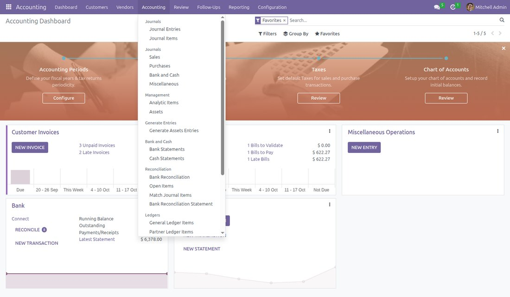
The Accounting menu, with the transactions, the journals, the
reconciliation screens and the ledgers.
1.4 Upgrading from an earlier 18 release
This guide describes release 1.3.0 of October 2026. If an earlier release of the suite already runs on your
Odoo 16, upgrade it as a whole: this release adds modules and changes several of the others.
Back up the database before anything else.
Replace all the Odoo Mates accounting modules with this release, not only this app. The
new ones — reconciliation, statement import, cheque printing, cash forecast, currency rates and
revaluation, and the dashboards — must be in your addons path too, or the upgrade stops.
Restart Odoo, then Apps › Update Apps List, in developer mode.
Upgrade all the modules of the suite that are installed, together: Odoo upgrades a module and the ones
depending on it, not the modules it depends on, so upgrading Odoo 16 Accounting Community
alone is not enough. The new modules install themselves with it. From the command line,
-u accounting_pdf_reports,om_account_accountant,om_account_asset,om_account_budget,om_account_daily_reports,om_account_followup,om_fiscal_year,om_recurring_payments (or -u all).
Good to know
Your data is kept: the upgrade only adds to it. Nothing new switches itself on either — the
automatic currency rates, the automatic reconciliation and the blocking over the credit limit stay off
until you set them up (sections 2.13 and 11).
Part 2
The settings, one screen at a time
2.1 Do this before the first entry
Almost everything on Configuration › Settings can be
changed later. A few things cannot, or cost a day of corrections if you change them
once entries exist. Work down this part before you post anything, tick what applies
to you in section 2.14, and leave the rest alone — a setting you do not need is
a feature you do not have to understand.
Watch out
The three that are hard to undo: the fiscal localisation (it
cannot be changed once a journal entry is posted), Anglo-Saxon
accounting, and the currency of the company. Decide
those first.
2.2 The fiscal localisation, and the chart it installs
Configuration › Settings › Fiscal Localization.
The package is your country's accounting kit: a chart of accounts, its taxes, the
default journals, the fiscal positions and the tax report of that country. Odoo
Community ships one for most countries, and installing it is the single biggest
saving of the whole setup.
Set the country of the company first, under
Settings › Users & Companies › Companies.
The list of packages follows it.
Choose the Package and save. Odoo installs the localisation
module and loads the accounts, the taxes and the journals.
If no package fits, take the generic chart and build on it. Do not start from an
empty chart unless you enjoy typing account types.
Watch out
The package can only be selected while no journal entry has been
posted. On a database that has been used, the field is closed —
changing the chart then means a new database or a manual chart. This is the one
setting to get right on day one.
What to do with the chart once it is installed is section 3.2.
2.3 Taxes: the defaults, and how they are rounded
Configuration › Settings › Taxes.
Setting
What to do with it
Default Sale Tax Default Purchase Tax
The tax put on a new product, and on an invoice line that has no product.
The localisation sets these; change them only if your standard rate is not
the one it chose. A product with its own taxes ignores them.
Default Sales Price Include
Whether the prices you type already include the tax. Retail and most of the
Gulf work tax-included; business-to-business usually does not. It decides
how every price on a document is read, so set it before you load products.
Rounding Method
Round per Tax adds the lines up first and rounds the tax once, on
the total. Round per Line rounds the tax of each line and adds the
rounded amounts. See below.
Cash Basis
Declare the tax when the invoice is paid rather than when it is issued.
Turn it on only if your tax office works that way, and give it its own
journal and base account — it posts a second set of tax entries.
Rounding of Tax Return, periodicity
How the tax report is rounded and how often you file. Set them with your
tax return, not before. The periodicity reminders are an Enterprise feature;
here the Tax Report offers the period shortcuts instead (section 13.4).
Good to know
The rounding method is not a matter of taste. On a hundred lines of
0.15 at 5 %, rounding per line and rounding per tax differ by a few cents, and
the difference lands in the tax account. Most tax administrations tell you which
one they expect; if yours does not, keep Odoo's default — Round per
Tax — and keep it for good. Changing it later makes old and new
documents disagree.
2.4 Rounding the total of a document
This is a different thing from the tax rounding above: it rounds the total of
the invoice, for countries whose smallest coin is bigger than a cent.
Turn on Total Rounding in Configuration ›
Settings › Taxes, and set the profit and loss accounts the rounding
difference is posted to.
Open Configuration › Accounting › Cash Roundings and create a
method: the Precision (0.05 for a five-cent coin, 100 for a
currency with no small change), the Method — Up, Down or
Nearest — and the Strategy: add a rounding line to the
invoice, or modify the tax amount.
Put the method on the invoices that need it, or on the customer.
Leave the whole thing off if your currency rounds to the cent, which is most of them.
2.5 Anglo-Saxon accounting
Configuration › Settings › Stock Valuation, on a
database that holds stock.
With Anglo-Saxon accounting on, the cost of a good is recorded as an expense when it is
invoiced to the customer, against a stock interim account, so that the
cost sits in the same period as the revenue it earned. With it off — Continental
accounting — the cost is recorded when the goods are received.
Which one you use is decided by your accounting tradition, not by preference: the
English-speaking world and most international groups use Anglo-Saxon, much of
continental Europe does not.
Watch out
Change this only on an empty database. Switching it once stock has moved leaves the
interim accounts holding balances that belong to the other method, and they have to
be cleared by hand.
2.6 Analytic accounting
Configuration › Settings › Analytics. Analytic
accounting is the second dimension of your books: the same expense is posted once to
an account for the financial statements, and once to a project, a department, a branch
or a vehicle for management.
Turn it on if you need to answer “what did this cost us?” about something
that is not a general ledger account. Then create the plans and the analytic accounts
under Configuration › Analytic Accounting › Analytic Accounts, and fill the
Analytic Distribution column on invoice lines, journal entries,
recurring templates, budget lines and reconciliation counterparts.
Good to know
Leave it off and the reports drop the column rather than printing an empty stripe:
the analytic column of the General Ledger and of the journal entry print, and the
analytic filters of the report wizards, appear only when the feature is on. Budget
lines can still be measured by budgetary position without it (section 8.1).
2.7 More than one currency
Configuration › Settings › Currencies.
Check the currency of the company first. It is the currency your
books are kept in and every report is printed in, and changing it once entries
exist does not re-convert them.
Turn on Multi-Currencies, then activate the currencies you trade
in under Configuration › Accounting › Currencies. A currency
that is not active cannot be chosen anywhere.
Set the Exchange Gain or Loss Journal and the gain and loss
accounts. This is what Odoo posts the difference to when an invoice is paid at a
rate other than the one it was issued at, and it will fail at the worst moment if
it is empty.
How to work with foreign currency documents is part 11.
2.8 Where the rates come from
A rate typed by hand once a month is a rate that is wrong for twenty-nine days. This
suite fetches them for you, from Configuration › Settings
› Automatic Currency Rates.
Source
What you need
Frankfurter European Central Bank
Nothing. About thirty major currencies, published on working days. Start here.
Open Exchange Rates
An App ID from their site. Every currency, including the ones the banks do not quote.
ExchangeRate-API
A key. A good second source.
Set how often — manually, daily, weekly or monthly — the currencies to
update, and a Maximum Change so a source having a bad day is reported
instead of saved. Add a backup source for the currencies the main one
does not quote. The detail of all of this is section 11.2.
2.9 The revaluation accounts
What you are owed in a foreign currency is worth something different at the end of the
period than it was when you invoiced it. Revaluation books that difference, and it
needs three settings filled in once, in the Currency Revaluation
block:
The journal the adjustment is posted in — the miscellaneous
one is the usual choice.
The unrealized gain and unrealized loss accounts.
Unrealized, because the money has not moved yet: keep them apart from the realized
exchange accounts of section 2.7.
Whether the entry is reversed at the start of the next period.
Leave it on unless your accountant asks otherwise.
Running it is section 11.3.
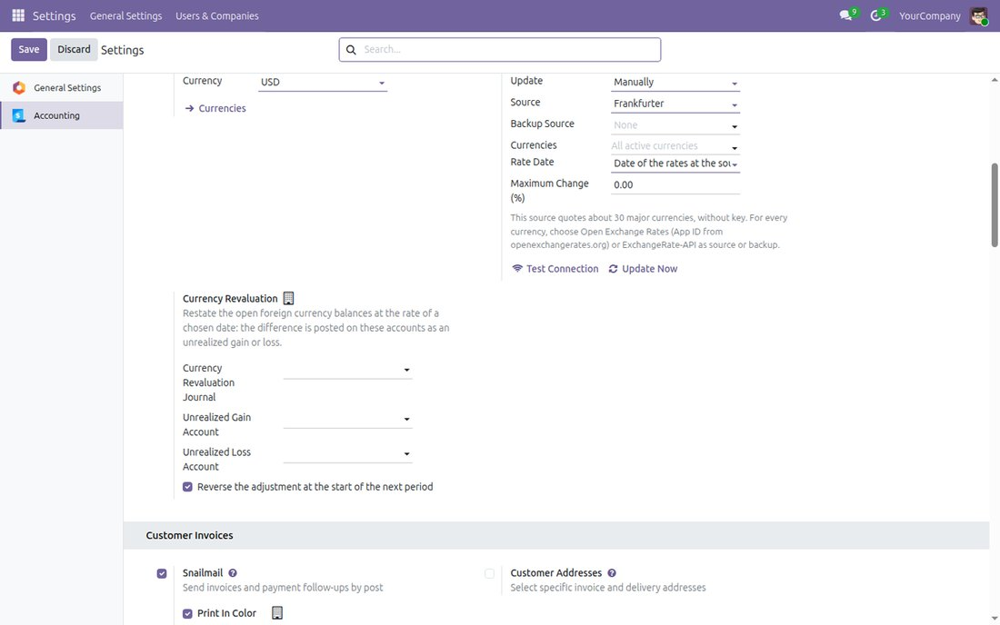
The automatic rates and the revaluation accounts, in the accounting
settings.
2.10 Cheque printing, and its layout
Two screens, and people miss the first one. Configuration ›
Settings › Checks holds how a cheque is printed:
Setting
What it does
Check Layout
Where the cheque sits on the page: top, middle or bottom of an A4 or Letter
sheet. Match it to the stationery your bank gives you.
Top, Left and Right Margin
The nudge in millimetres that makes the print land inside the boxes. Print
one on plain paper and hold it against a real cheque.
Print Date Label
Off when the word Date is already printed on your cheques.
Multi-Pages Check Stub
On when a payment settles more invoices than fit on one stub.
The second screen is Configuration › Invoicing › Cheque
Formats, where this suite lets you position every printed field to the
millimetre and watch a live preview — the Gulf, UK and Irish, Australian and New
Zealand leaves are there, and you can build your own. Set the finished format on the
bank journal, under Cheque Format, and choose Configurable Cheque
Format as the Check Layout of the company. That is section 5.7.
2.11 The Gulf states
Set the company's country to Bahrain, Kuwait, Oman, Qatar, Saudi Arabia or the United
Arab Emirates and pick that country's fiscal localisation (section 2.2). You get its
chart of accounts, its VAT rates — 5 % in most of the six, 15 % in
Saudi Arabia — and its tax report.
One setting appears only for those six, in Configuration ›
Settings › Invoicing:
Gulf Cooperation Council Format — prints invoices, credit
notes, debit notes, vendor bills and refunds in Arabic and English, side
by side, which is what the tax authorities of the region require.
Two more things worth setting in the region: the company's VAT number
on the company record, so it prints on every document, and a cheque format from the
Gulf leaves (section 2.10) — cheques are still ordinary practice there.
Good to know
The Arabic invoice needs the Arabic language installed:
Settings › Translations › Languages. Install
it before you turn the dual language format on, or the second column prints in
English twice.
2.12 Fiscal years, and the dates you lock
Turn on Fiscal Years in the settings if your year does not run from
January to December, or if you want to close month by month. Then set the last day of
the financial year, and create the years and their periods as in section 3.5.
The lock dates live in the same area and are the strongest control in
the suite; they are worth a section of their own, 12.1. Do not set them now — set
them the first time you close a period.
2.13 What this suite adds to the screen
Beyond the settings Odoo ships, these appear once this app is installed:
Option
What it does
Reconcile New Transactions Automatically
Lets the reconciliation models work on imported transactions without being
asked. Section 6.3.
Automatic Currency Rates
The source, the frequency and the currencies. Sections 2.8 and 11.2.
Currency Revaluation
The journal and the unrealized gain and loss accounts. Sections 2.9 and 11.3.
Refuse to post an invoice going over the limit
Under the customer credit limit: a customer invoice that goes over the limit of the
customer is refused, except for the accounting managers, and the override is logged.
Enhanced Financial Reports
Preview the financial reports on screen instead of downloading them.
2.14 The checklist
Walk down this once. Everything marked always has to be right before the first
entry; the rest depends on how you work.
Setting
When
Where
Company: country, currency, VAT number, address
Always
Settings › Users & Companies › Companies
Fiscal localisation package
Always
Settings › Fiscal Localization
Chart of accounts: types and Allow Reconciliation
Always
Configuration › Chart of Accounts
Journals, one per bank account
Always
Configuration › Accounting › Journals
Outstanding accounts on every payment method
Always
The journal, Incoming and Outgoing Payments tabs
Default sale and purchase tax, prices tax-included or not
Automatic rates: source, frequency, maximum change
If you trade abroad
Settings › Automatic Currency Rates
Revaluation journal and unrealized accounts
If you trade abroad
Settings › Currency Revaluation
Cheque layout and margins, then a cheque format
If you pay by cheque
Settings › Checks, Configuration › Cheque Formats
Gulf Cooperation Council format, Arabic installed
In the Gulf
Settings › Invoicing
Fiscal years and periods
If your year is not the calendar
Settings, then Configuration › Fiscal Years
Automatic reconciliation
If you import statements
Settings › Accounting
Part 3
Setting the books up
3.1 The order to do it in
Work through this once, in this order. Each step depends on the one before it.
The settings — part 2, and the fiscal localisation first of all.
Chart of accounts — the accounts you will post to.
Journals — sales, purchase, bank, cash, miscellaneous.
Outstanding accounts — on every payment method of every bank and cash journal.
Taxes — the rates you charge and pay.
Fiscal years and periods — the calendar your books close on.
Opening balances — what you owned and owed on day one.
3.2 Chart of accounts
Configuration › Accounting › Chart of Accounts.
Odoo installs a chart for your country when you pick the fiscal localisation in the
settings (section 2.2). Do that first, then adjust it — it is far less work than
building a chart by hand.
Go through the accounts and set the Type correctly. The type, not
the code, is what drives the reports: a Balance Sheet is built from the receivable,
payable, bank, fixed asset, current asset, current liability and equity types, and a
Profit and Loss from the income and expense types.
Mark the accounts that must be reconciled — receivable, payable, and any
suspense or transit account — with Allow Reconciliation.
Without it, those accounts will not appear in Match Journal Items.
Deprecate rather than delete the accounts you will not use: an account with entries
cannot be deleted.
Keep the codes unique, and keep them in the ranges your localisation uses. The code
is what an auditor reads first.
Watch out
Account types matter more than you think. Every report in this
suite — and every dashboard — is computed from account types so that it
works with any chart of accounts. An expense account typed as a current asset will
quietly disappear from the Profit and Loss.
3.3 Journals
Configuration › Accounting › Journals. A journal groups entries of
one kind and gives them their numbering.
Nothing in particular; keep one general journal for adjustments.
Create one bank journal per real bank account and write the account number on it.
The statement import uses that number to find the right journal by itself.
Check the suspense account of each bank and cash journal. Reconciliation puts
whatever is not yet matched there, so it should be an account you can see and
empty.
Give each journal a short, distinctive code: it is what appears in the Day Book and
the ledgers.
3.4 Outstanding accounts, and the In Payment state
Every bank and cash journal carries two tabs, Incoming Payments and
Outgoing Payments. Each holds a payment method with an
Outstanding Account, and that one setting decides whether an invoice
becomes Paid when you register the payment, or waits in In Payment until the bank
confirms it.
How you work
Set the outstanding account to
What happens
You import and reconcile bank statements
A separate Outstanding Receipts and Outstanding Payments account.
Registering a payment puts the invoice In Payment; reconciling the
bank transaction with it moves the invoice to Paid. The bank account
in Odoo only ever shows what the bank has confirmed.
You do not reconcile statements
The account of the journal itself — the bank account on the bank journal, the cash account on the cash journal.
The payment lands directly on the bank or cash account and the invoice goes
straight to Paid. Nothing waits in an intermediate account, and there
is no In Payment step.
Open Configuration › Accounting › Journals and the bank journal.
On the Incoming Payments tab, set the Outstanding Account of each payment method.
Do the same on the Outgoing Payments tab.
Repeat on the cash journal, using the cash account.
Watch out
Never leave the outstanding account empty. A payment registered on
a journal whose payment method has no outstanding account is recorded and settles
the invoice, but writes no journal entry at all: nothing reaches the books, and
nothing appears in the ledgers or the open items. Whichever of the two setups you
choose, the account must be filled in.
Tip
The first setup is the safer one, and it is why the In Payment state exists: it
separates the money you have recorded from the money the bank has confirmed. Take
the second only when you genuinely do not reconcile — a cash till that is
counted rather than reconciled is the usual case. The Bank Reconciliation Statement
(section 13.5) is the report that explains the gap between the two.
3.5 Fiscal years and periods
Configuration › Accounting › Fiscal Years.
Create the fiscal year with its start and end date. Most companies use the calendar
year; if yours ends in March or June, set it here and every report that offers
“this financial year” follows it.
Generate the periods — usually monthly. Periods are what you close one at a
time during the year.
Leave the year open until everything is posted and reconciled; closing it is
section 12.3.
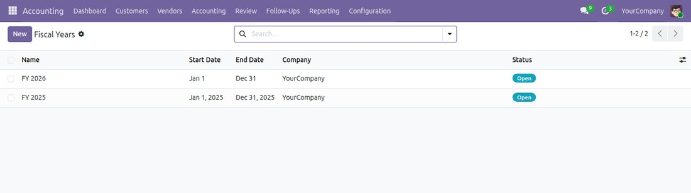
A fiscal year and the periods generated inside it.
Part 4
Opening balances
4.1 What you need before you start
Opening balances are how the books you kept before Odoo become the books you keep in
Odoo. Get them from your previous system or your accountant, dated the day before your
first day in Odoo.
A trial balance at that date: every account with its debit or credit balance.
The list of unpaid customer invoices, one line per invoice.
The list of unpaid vendor bills, one line per bill.
The bank and cash balances, and the statement number you stopped at.
The assets still being depreciated, with their purchase value and depreciation already posted.
4.2 Posting the opening entry
Create a dedicated Opening Balance account of type Equity, or use
the one your chart provides.
Go to Accounting › Transactions › Journal Entries, create an entry
in the Miscellaneous journal dated the day before you go live.
Enter one line per account from your trial balance, debit or credit as it stands. Do
not enter a single lump line for receivables and payables — see the next
step.
For the receivable and payable accounts, enter one line per open invoice or bill,
each with its partner and, in the Due Date column, the real due
date. This is what makes the aged balances, the follow-ups and the cash forecast
correct from day one.
Check that the entry balances, then post it.
Tip
Enter the open invoices as separate lines with their due dates even though it is
more work. A single lump receivable line gives you a correct balance sheet and a
useless aged balance, follow-up and forecast.
4.3 Opening the bank
Set the opening balance of each bank journal by entering the closing balance of your
last paper statement as the starting balance of your first statement in Odoo. The bank
line of the opening entry above and that starting balance must agree.
4.4 Opening the assets
Assets bought before you went live are entered in the Assets screen with their original
purchase value and the depreciation already posted, so that only what is left
depreciates in Odoo. See section 7.4.
Part 5
The daily work
5.1 Customer invoices
Customers › Invoices. The cycle is always the same:
draft, confirm, get paid, reconcile.
New, pick the customer; the payment terms and the receivable
account come from their record.
Add the lines. The income account comes from the product, or from the journal if the
line has no product.
Check the taxes and the Due Date, then Confirm.
The invoice takes its number from the sales journal and the entry is posted.
Send it by email or print it.
When the money arrives, Register Payment (section 5.4) or match it
on the bank reconciliation screen (section 6.3).
5.2 Vendor bills
Vendors › Bills. Same cycle, and two things worth
watching:
Put the vendor's own document number in Bill Reference. Odoo warns
you if the same reference comes in twice from the same vendor, which catches most
duplicate payments.
5.3 Journal entries by hand
Accounting › Transactions › Journal Entries. For payroll, depreciation
entered manually, accruals, corrections and anything that is not an invoice, a bill or
a payment.
New, choose the journal and the date. The date decides the period,
so check it against your lock dates.
Enter the lines with their accounts, partners where relevant, and analytic
distribution if you use analytics (section 2.6).
The entry must balance to the cent before it can be posted.
Post it. A posted entry can no longer be edited; correct it with a reversal instead
(Reverse Entry), which keeps the audit trail intact.
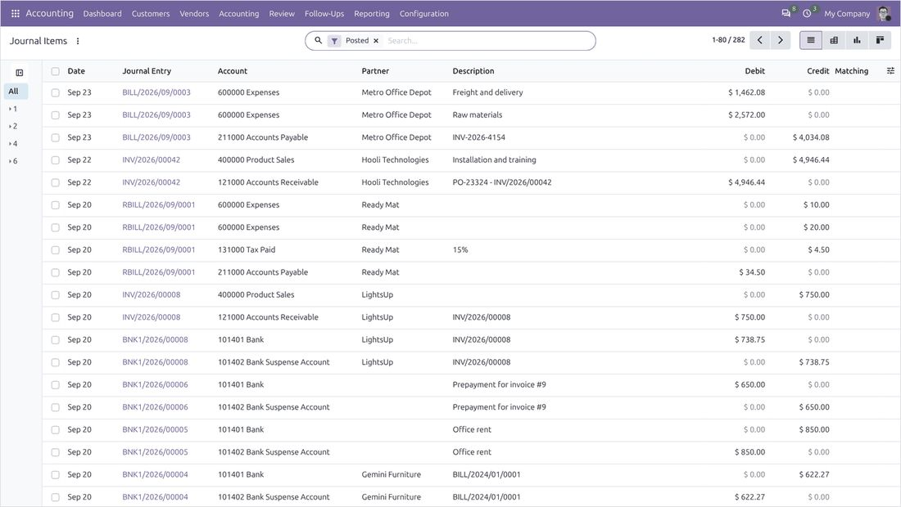
The journal items, with the filters every accountant needs.
5.4 Payments
There are three ways to record money moving, and they end up in the same place.
Way
When to use it
Register Payment on an invoice or bill
You know which document is being paid. The payment is created and matched with the invoice at once.
Customers / Vendors › Payments
A payment on account, a deposit, or several invoices paid at once.
Bank reconciliation
You are working from the bank statement rather than from the document. Section 6.3.
Good to know
A payment sits on the outstanding receipts or outstanding payments account until it
is reconciled with the bank statement. That is deliberate: it is money you have
recorded but the bank has not confirmed. The cash forecast counts it separately for
the same reason, and the Bank Reconciliation Statement (section 13.5) is the report
that sets the two side by side.
5.5 Post-dated cheques
A cheque dated next month is not money in the bank yet. It should not sit in the bank
account, and the invoice it settles should not stay open either. A journal of its own
solves both.
Setting it up, once
Create two accounts with Allow Reconciliation ticked: Post-dated
cheques received (a current asset) and Post-dated cheques issued (a current
liability).
Create two journals of type Bank: PDC Received and PDC Issued, each
with the matching account as its own account.
On both journals, set the outstanding account of the payment methods to that same
account, so nothing lands in an intermediate account on the way (section 3.4).
A customer pays you with a post-dated cheque
Register Payment on the invoice with the journal PDC Received,
dated the day you received it.
Write the cheque number and its due date in the memo — that is what makes the
account readable later.
The invoice is settled and the amount sits in Post-dated cheques received, not in
the bank.
On the due date, when the bank credits the cheque, record the receipt in the real
bank journal, then settle the two against each other with an entry: debit the bank,
credit Post-dated cheques received. If you import statements, match the incoming
transaction against the open cheque line on the reconciliation screen instead
(section 6.3) — same result, less typing.
You pay a vendor with a post-dated cheque: the mirror image. Register the payment with
PDC Issued, print the cheque itself with the cheque formats (section 5.7), and when it
is presented, debit Post-dated cheques issued and credit the bank.
Tip
The balance of each PDC account is then exactly the cheques in hand that have not
cleared, and the General Ledger on that account is your cheque register. A cheque
that bounces is handled by reversing the settlement entry, which puts the amount
back on the PDC account — or by reopening the invoice if the customer has to
pay again.
Good to know
One journal per direction is usually enough. Create one PDC journal per bank only if
you need the cheques of each bank kept apart.
5.6 Recurring payments
Accounting › Recurring Payments, templates under
Configuration › Management › Recurring Templates.
For rent, leases, subscriptions and loan instalments — anything with the same
amount on the same day each period.
Create a template with the lines of the entry: accounts, partner, amounts, analytic distribution.
Create the recurring payment from it: the journal, the start date, how often it repeats and until when.
Odoo generates the entries on schedule. With Auto-Post Entries they
are posted as well; without it they wait in draft for you to check.
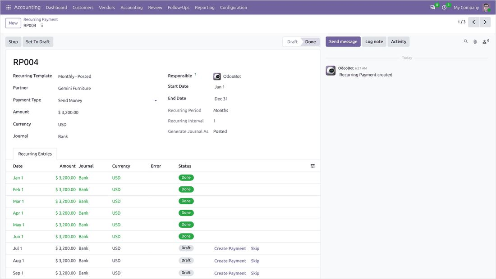
A recurring payment and the entries it has generated.
5.7 Printing cheques
Configuration › Invoicing › Cheque Formats, then
print from the vendor payment. The page layout and the margins live in the settings
(section 2.10).
Pick the shipped format closest to your cheque — cheque on top, in the middle
or at the bottom of an A4 or Letter page, or one of the cheque leaves (US, Canada,
UK and Ireland, the Gulf, Australia and New Zealand).
Duplicate it and set the paper size and the position of every printed field in
millimetres. The preview on the form shows a test print with sample values and
follows every change.
Print the test page on plain paper, hold it against a real cheque, and correct with
Move Right and Move Down until it lines up.
Set the finished format on the bank journal, under Cheque Format, and
choose Configurable Cheque Format as the Check Layout in
Settings › Checks.
Pay a vendor with the Checks payment method, then Print
Checks.
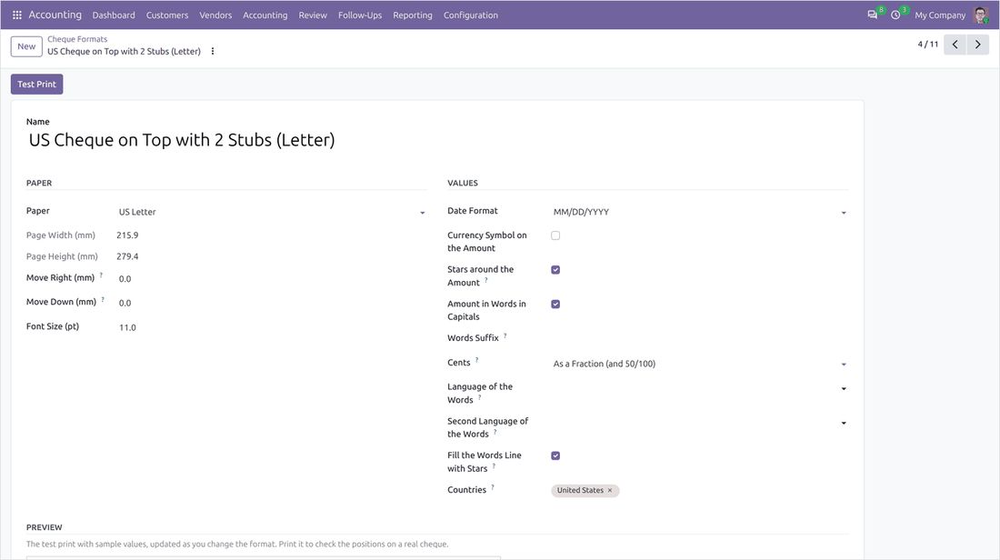
A cheque format: every field positioned in millimetres, with a live
preview.
Tip
Leave Print the MICR Line off when you print on the pre-printed
cheques of your bank — the magnetic line is already on the paper. Turn it on
only for blank cheque stock, and upload an E-13B font.
Part 6
Bank and cash
6.1 Importing the statement
The Import Statement action on the bank card of the
Accounting › Dashboard.
Drop in the files your bank gives you. Each file is handed to the parsers in turn
and read by the first one that recognises it, so you never have to say which format
it is: CAMT.053, MT940, OFX/QFX, QIF, or CSV and Excel.
Leave the Journal empty if the file carries the bank account
number: the right journal is found from it. A file imported into the journal of
another account is refused.
For CSV and Excel, choose a File Map. Once it is set on the journal
it is filled in automatically at every later import. Without one, the map
Date, Label, Reference, Partner, Amount, Currency reads the files of the
earlier versions of this module for 16.0, as they were.
Import. Transactions already imported are skipped — the identifier the bank
gives each transaction is kept — and the message tells you how many were new
and how many were already there.
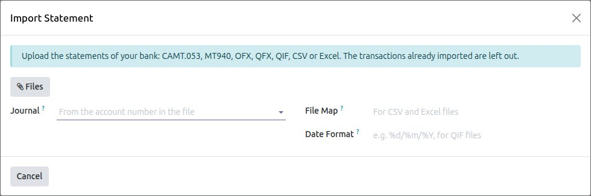
The import wizard: the files, the journal and the file map.
6.2 Building a file map for your bank
Configuration › Bank Statement File Maps. A map
describes one bank's CSV or Excel export, once.
Setting
What to put in it
Encoding, Delimiter, Text Delimiter
utf-8 and a comma for most banks; write tab for a TSV.
Decimal / Thousands Separator
Match how your bank writes 1,234.56 or 1.234,56 or 1 234,56.
Date Format
Python notation: %d/%m/%Y, %m/%d/%y, %Y-%m-%d.
Rows to Skip, Has a Header Row, Sheet
Skip the preamble many banks put above the table.
Amount, or Debit and Credit
One signed column, or two. Debit is Positive if your bank does not use a minus sign.
Label, Reference, Partner, Account Number, Currency, Notes, Unique ID
Name the columns by their header, or by their number when the file has none. The Unique ID column is what stops a re-import duplicating transactions.
6.3 Reconciling the bank
Accounting › Reconciliation › Bank Reconciliation,
or the Reconcile button on the bank card of the dashboard.
Pick the journal and filter on To Reconcile. For the selected
transaction, Odoo lists the open journal items most likely to be its counterpart,
ranked by amount, reference, partner and direction.
If a suggestion is right, select it and Validate. You can match one
item, several, or only part of an amount.
If nothing fits, search the open items yourself, or add a counterpart by hand with
its account, label, partner, taxes and analytic distribution — bank charges
and interest are done this way.
Apply a reconciliation model to fill the counterparts in from its
lines for anything you do repeatedly.
Whatever is not covered stays on the suspense account, so nothing is ever lost.
Mark a transaction to check when you are unsure; it stays visible
for a colleague.
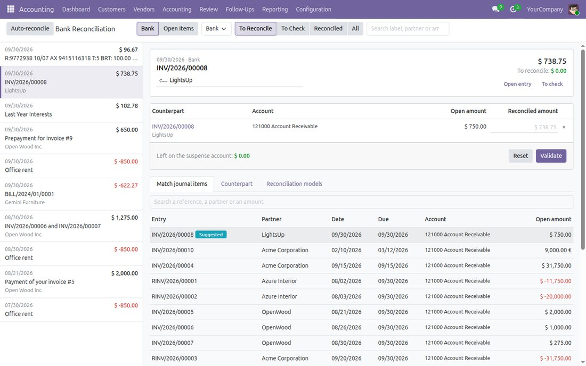
The reconciliation screen: the transaction, its counterparts and the
suggestions.
Tip
Let the automatic reconciliation do the repetitive part: reconciliation models with
an automatic trigger, partner mapping models that fill in the partner of a new
transaction, and the rule that reconciles a transaction matching exactly one open
item by amount and reference. A scheduled action treats new transactions daily and
runs again as soon as more are imported.
6.4 Match Journal Items
Accounting › Reconciliation › Match Journal Items.
For everything that is not a bank transaction: an invoice paid by a credit note, an
advance applied to a bill, two entries that cancel out.
The open items of the reconcilable accounts are listed, grouped by account and partner.
Select the items that belong together and press Match. The wizard
shows the debit, the credit and the difference.
Write the difference off on a journal, account, date and label of your choice —
or leave it, and the items are matched partially.
Match Suggestions reconciles, in one go, every group of items of the
same account and partner whose amounts cancel each other.
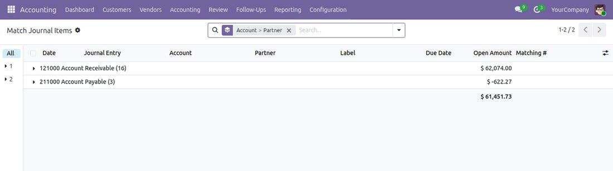
Match Journal Items, grouped by account and partner.
6.5 Cash
A cash journal works the same way with two differences: New Transaction
types the movements in by hand, and New Statement records the cash
counted at the end of the day. Reconcile the counted amount against the movements so
the till agrees with the books, then print the Cash Book (section 13.6).
Part 7
Assets
7.1 Asset categories
Configuration › Management › Asset Category. A
category is a template: set it up once and every asset of that kind inherits it.
Asset account — where the gross value sits.
Depreciation account — the accumulated depreciation, on the balance sheet.
Expense account — where the periodic charge is posted.
Journal — usually the miscellaneous one.
Method — linear or degressive, the number of depreciations and their period.
Prorata temporis — start depreciating on the purchase date rather than the first of the period.
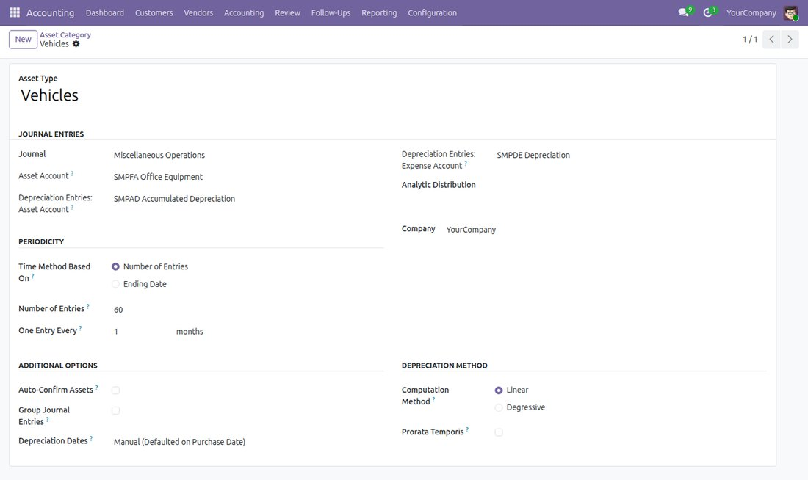
An asset category: the accounts, the journal and the method every asset of
that kind inherits.
7.2 Creating an asset
Configuration › Accounting › Assets › New: name, category,
purchase value and date. The board is computed as you type.
Or let the vendor bill do it: put the asset category on the bill line and confirm the
bill — the asset is created and linked to it.
Check the depreciation board: one line per period with its date, amount and remaining
value.
Confirm the asset to put it in service.
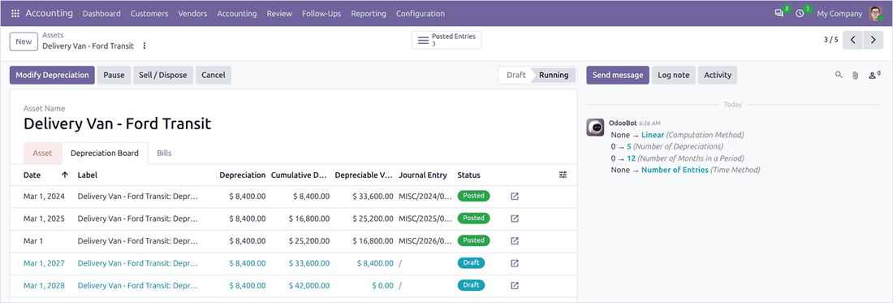
An asset with its depreciation board.
7.3 Posting depreciation
Each board line is posted in its period, either by the scheduled action or with
Create Move on the line. The entry debits the expense account and
credits the accumulated depreciation.
When an asset is sold or scrapped, use Sell or Dispose: the remaining
value is depreciated in one last entry and the asset is closed. Invoice the sale itself to
the buyer as usual. Modify Depreciation changes the number or the length
of the periods still to come, from the next one.
7.4 Assets that already existed
For an asset bought before you went live, create it with the value still to depreciate
— the purchase value less the depreciation already booked — and the number of
depreciations left, so that only the remaining value depreciates in Odoo. The opening entry (section 4.2) carries the gross value and the
accumulated depreciation on the balance sheet; the asset record only drives what
happens from now on.
7.5 Asset reports
Reporting › Management › Assets gives
the gross value, the depreciation posted and the depreciation still to post, by asset,
category and date, in pivot and graph form. The Assets dashboard of the
Dashboards app shows the same figures at a glance.
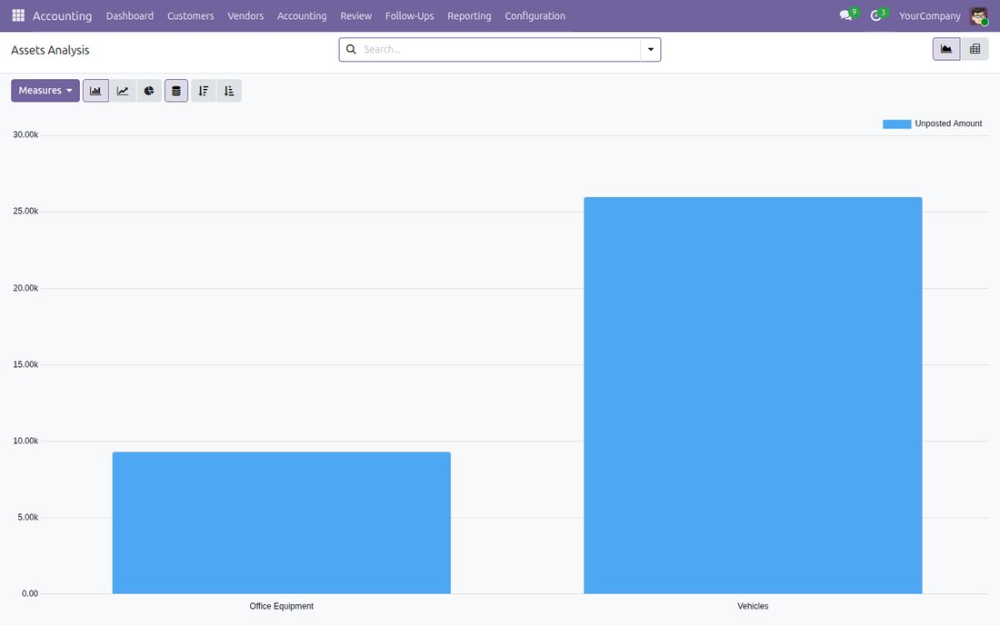
The Assets Analysis: the depreciation posted and to post.
Part 8
Budgets
8.1 Budgetary positions
A budgetary position is a named group of accounts — “Operating
expenses”, “Product sales” — and it is what a budget line is
measured against. Create them first, under Configuration ›
Management › Budgetary Positions, and put the relevant accounts in each.
8.2 Creating a budget
Configuration › Accounting › Budgets › New: a name, the
responsible, and the period the budget covers.
Add the lines: a budgetary position, an analytic account if you budget that way
(section 2.6), and the planned amount.
Enter the expenses as negative amounts and the revenues as positive ones, as Odoo
reads them in the books.
Leave the Paid Date empty to spread the line over its period, or set it
when the amount is expected in full on one day — this is what makes the
theoretical amount meaningful.
Confirm the budget, then Approve it; the figures
fill in as the entries are posted.
Each line then shows the planned amount, the theoretical amount expected by today, the
actual amount posted, and the achievement as a percentage.
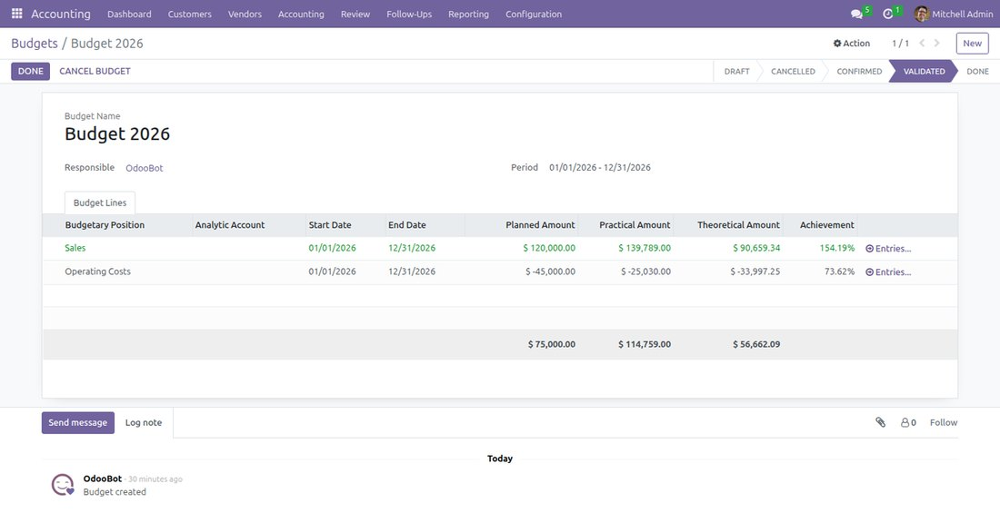
A budget with its lines, the amounts achieved and the totals of the
period.
8.3 Following a budget
Reporting › Management › Budgets Analysis
gives every line in pivot, list and graph, grouped by budget, position or analytic
account.
The Budgets dashboard of the Dashboards app compares the actual
expenses and revenues with what the budgets expected at this date.
Open the entries behind a line from the line itself, to see what made its actual
amount.
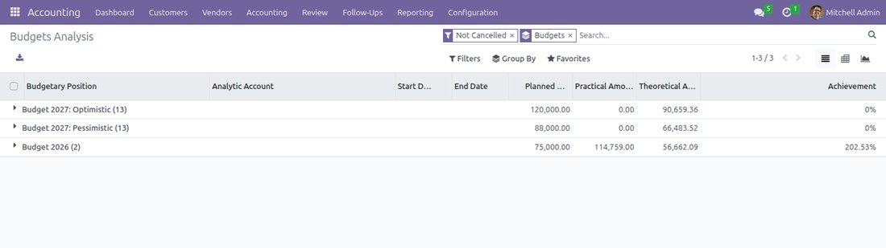
The Budgets Analysis.
Part 9
Getting paid: follow-ups
9.1 Follow-up plans
Configuration › Invoicing › Follow-up Plans. A
plan is a ladder of levels, each triggered a number of days after the due date.
Create the levels: 7 days — a reminder email; 21 days — a firmer letter;
45 days — a phone call activity; 60 days — send to legal.
For each level choose what happens: send an email, print a letter, raise an activity,
or simply mark the customer.
Write the message on the level. The customer statement can be attached so the
customer sees exactly what is open.
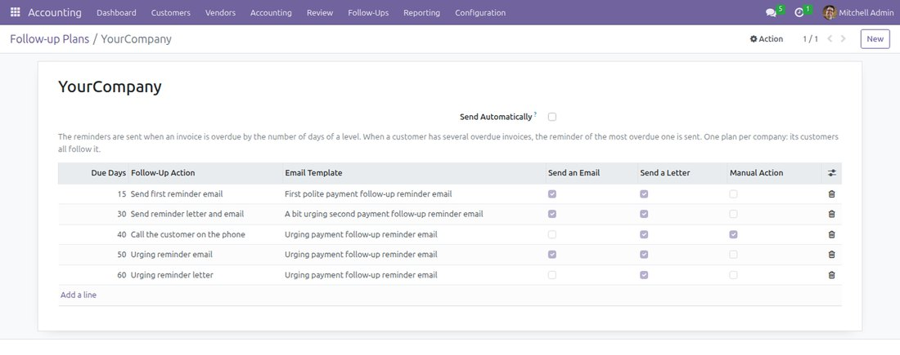
A follow-up plan and its levels.
9.2 Working the list
Follow-Ups › Follow-ups. One line per customer with
something overdue.
Open a customer to see every open invoice, how late each one is, and the total owed.
Act on the level Odoo proposes, or override it.
Record a promise to pay with a date: the customer drops off the list
until that date.
Mark an invoice disputed so it stops driving reminders while it is
argued about.
Exclude a customer you never want chased automatically.
Send All Reminders processes the whole list in one go.
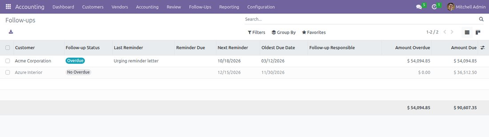
The follow-up list: who is late, by how much, and what to do next.
9.3 Customer statements
Print or email a statement of account from the customer or from the follow-up screen:
every open invoice, what has been paid, and the ageing of the balance. There is a vendor
statement too, for the accounts your suppliers send you.
Follow-Ups › Follow-Up Analysis
shows how the overdue balance is spread across the levels.
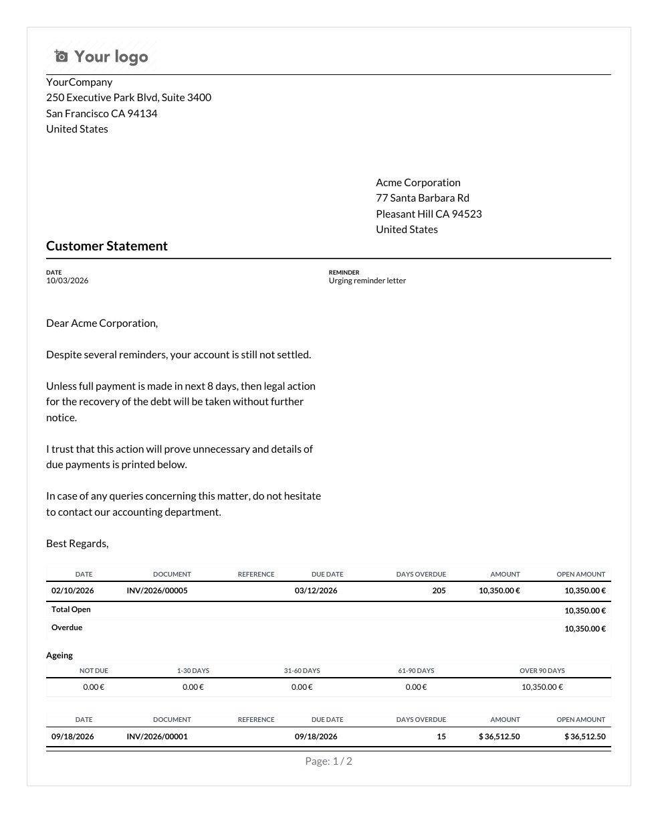
A customer statement.
Part 10
Cash forecast
10.1 Expected items
Accounting › Cash Forecast Items. Everything you know is
coming but that no document holds yet: salaries, rent, loan instalments, taxes, a
subsidy on its way.
A receipt or a payment, with its amount, currency, date and partner.
Once, or every week, month, quarter or year, until a date or without end.
A monthly item dated the 31st stays at the end of each month, whatever its length.
Archive an item that no longer applies rather than deleting it.
10.2 Running the forecast
Reporting › Management › Cash Forecast.
Choose the start date, by weeks or by months, and how many periods (up to 60).
Decide what to do with invoices and bills that are already due: give them their own
Overdue column, or leave them out.
Include the draft invoices and bills for the worst case, and detail the rows by
partner if you want to see who owes what.
Print it as a PDF, or export it to Excel with the Accounting Excel Reports module.
The forecast starts from the bank and cash balance of today and adds, period by period,
the customer invoices, the recurring receipts and the expected receipts, less the vendor
bills, the recurring payments and the expected payments, to a closing balance.
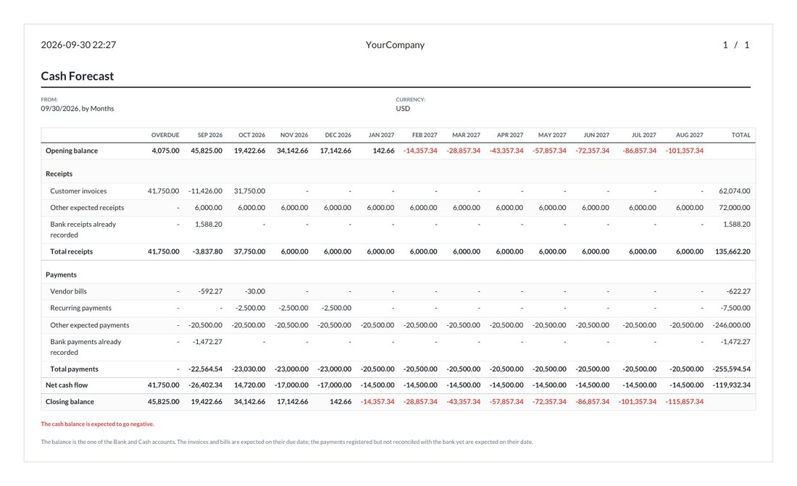
The cash forecast: opening balance, receipts, payments and closing balance
by month.
Part 11
Currencies
11.1 Multi-currency basics
Turn on Multi-Currencies in the settings and activate the currencies you
trade in (section 2.7). Every foreign currency document keeps its own amount and its
value in the currency of the company at the rate of its date.
Choose how often: manually, daily, weekly or monthly.
Choose the source: Frankfurter or the European Central
Bank (about thirty major currencies, no key), Open Exchange
Rates (every currency, with an App ID) or
ExchangeRate-API (with a key).
Add a backup source for the currencies the main one does not quote, or for the days
it does not answer.
Limit it to the currencies you care about, and set a Maximum Change
so an absurd rate is reported instead of saved.
Test Connection checks the source and shows a few rates without
saving anything; Update Now fetches them at once.
Each rate keeps the name of the source it came from; the ones you type in yourself stay
blank. After three failures in a row the accounting managers are notified.
11.3 Revaluing at the closing rate
Accounting › Closing › Currency Revaluation, at
the end of each period.
Set the journal and the unrealized gain and loss accounts once, in the settings
(section 2.9).
Open the wizard, choose the date — usually the last day of the period —
and the currencies, or leave them empty for all of them.
The lines are computed as you type: for each account, partner and currency, what is
open in the foreign currency, what it is worth in the books, what it is worth at the
rate of that date, and the difference.
Post Adjustment writes one entry for the whole difference, and
reverses it at the start of the next period unless you say otherwise.
Receivable and payable accounts are revalued on what is left open on them, invoice by
invoice; accounts held in a foreign currency, such as a foreign bank account, on the
balance they hold. A date can be revalued only once.
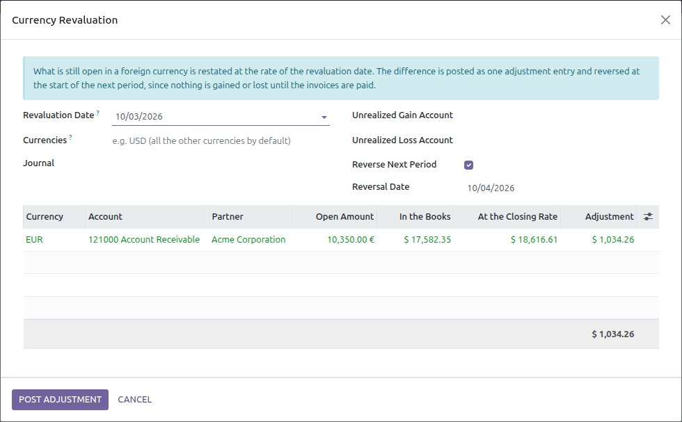
The revaluation, account by account, with the adjustment of each
line.
Part 12
Closing the books
12.1 Lock dates
Accounting › Closing › Lock Dates. The simplest
and strongest control in the suite.
Lock
Effect
Journal Entries Lock Date
Nobody but an accounting manager can post or change anything on or before this date.
All Users Lock Date
Nobody at all, managers included. Use it once a period is filed.
Tax Return Lock Date
Nothing that would change a filed tax return can be touched.
Tip
Move the lock date forward every month as soon as the period is reconciled and
reported. It costs nothing and it is the difference between a set of books that
stays correct and one that quietly changes underneath you.
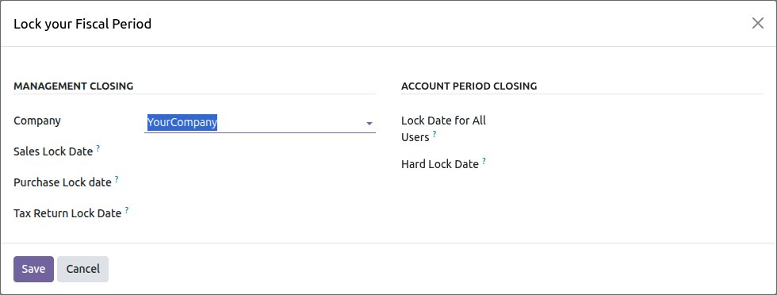
The lock dates.
12.2 Closing a period
Accounting › Closing › Period Closing. The
monthly routine:
Post everything: invoices, bills, payments, payroll, depreciation, recurring entries.
Import and reconcile every bank and cash statement to the last day of the period.
Print the Bank Reconciliation Statement and agree it to the bank (section 13.5).
Revalue the foreign currency balances (section 11.3).
Check the suspense accounts are empty and the open items make sense.
Run the Trial Balance and the Balance Sheet and compare them with last period.
Print the tax report, close the tax period and set the tax lock date (section 13.4).
Close the period and move the lock date forward.
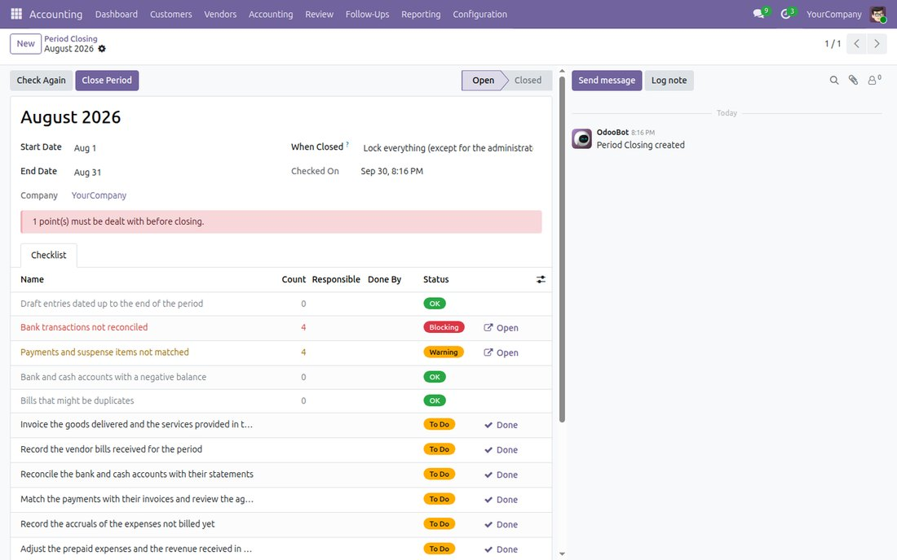
Period closing.
12.3 Closing a year
Accounting › Closing › Year-End Closing. After
the last period of the year is closed and your accountant's adjustments are posted, the
year-end entry carries the result of the year to the retained earnings account and opens
the next year. Closing Tasks keeps the checklist of what remains, and
the annual report (section 13.3) is the pack to hand over when it is done.
Part 13
The reports
13.1 Where they are
Every report of this suite is under Reporting, grouped the way an
accountant thinks:
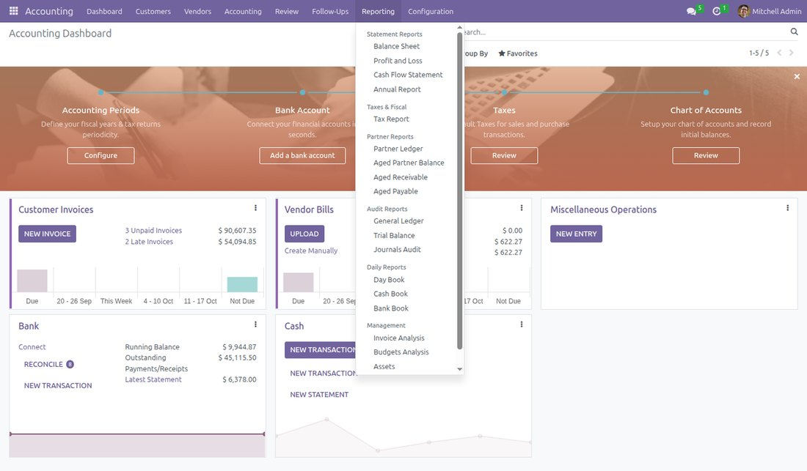
The Reporting menu: statement reports, partner reports, tax, audit reports,
daily reports and management.
Each one opens a wizard with the same three questions — which period, which
journals or accounts, and posted entries only or all entries — then prints a PDF.
With Enhanced Financial Reports on, you can preview them on screen
instead of downloading.
13.2 Statement reports
Report
What it answers
Balance Sheet
What the company owns and owes at a date, with comparison.
Profit and Loss
What it earned and spent over a period.
Cash Flow Statement
Where the cash came from and went, operating, investing and financing.
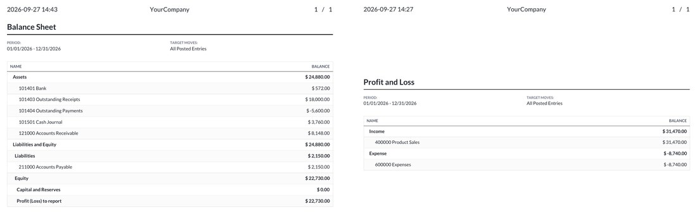
The Balance Sheet and the Profit and Loss.
13.3 The annual report
Reporting › Statement Reports › Annual Report. One
PDF for the whole year end: a cover page, a table of contents, and the statements in the
order an accountant expects them. It is the document you hand to an auditor, a bank or a
board, instead of three separate printouts.
Choose in the wizard what goes in it:
Option
What it adds
Balance Sheet, Profit and Loss, Cash Flow Statement
Any or all three, each starting on its own page and paginated so the contents page is right.
Compare with the previous year
A second column holding the same period one year earlier.
Show the variance
Two more columns: the movement against last year, in amount and in per cent.
Key figures
A page of the headline numbers — revenue, expenses, result, assets, liabilities, equity and cash — before the statements.
Notes
Your own text, printed at the end: the accounting policies, the events after the year end, whatever the reader needs.
Approval page
A closing page with space for the signatures of whoever approves the accounts.
The figures come from the same engines as the individual reports, so the annual report and
the Balance Sheet can never disagree.
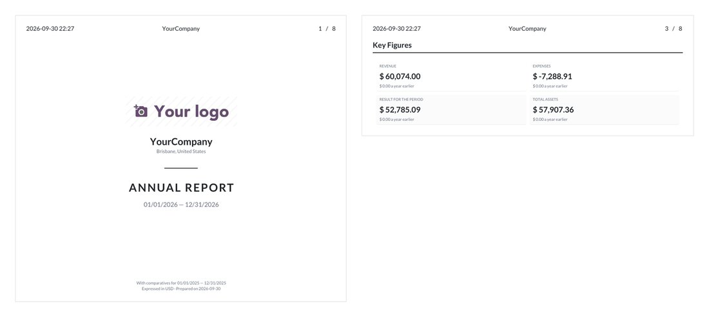
The annual report: the cover, and a balance sheet with last year and the
variance beside it.
13.4 Partner and audit reports
Report
What it answers
Partner Ledger
Every movement on one customer or vendor, with the running balance.
Opening, movements and closing per account — the first thing to run when something does not add up.
Journals Audit
The entries of each journal in posting order, with the tax detail.
Tax Report
The tax collected and paid for the period, ready for the return.
Reporting › Taxes & Fiscal › Tax Report. Pick
the period — this or last month, quarter or fiscal year — or Custom
and type the dates. The report prints the base and the tax of each tax, sales and
purchases apart. A cash basis tax counts in the period it is paid, not the period it
is invoiced.
Closing the tax period. An accounting manager clicks Close Tax
Period on the Tax Report, picks the journal and the tax payable and receivable
accounts, and confirms. Odoo drafts an entry on the last day of the period that empties
each tax account into the payable account (tax to pay) or the receivable account (tax to
recover). Check it, post it, then pay the tax office from that account. The choices are
remembered for next time, and a period can be closed only once.
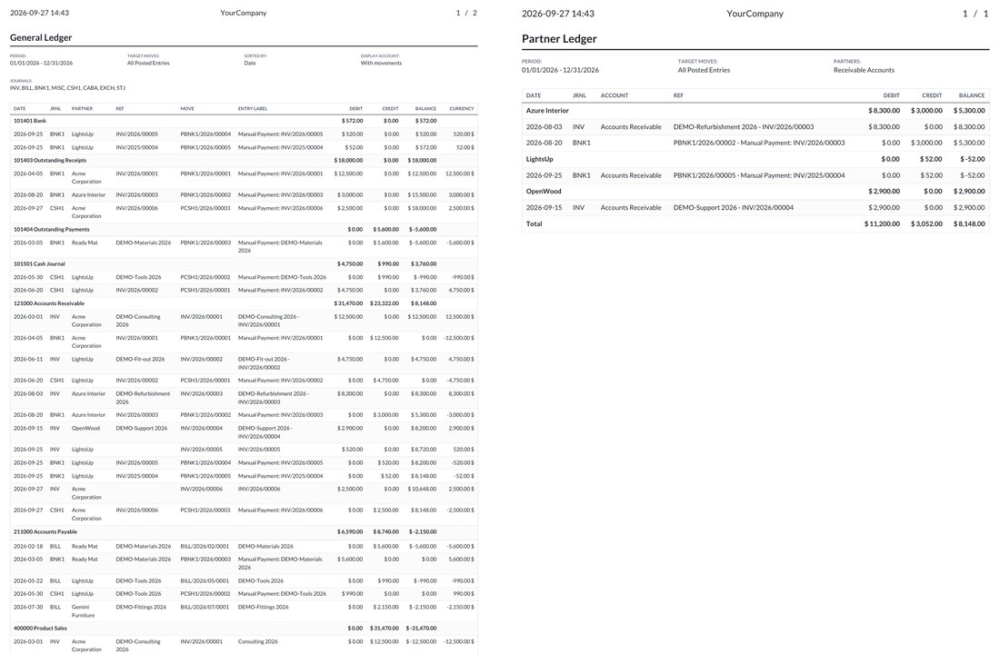
The General Ledger and the Partner Ledger.
13.5 The bank reconciliation statement
Accounting › Reconciliation › Bank Reconciliation
Statement. The report that explains the difference between what your bank says
you have and what your books say you have — the one an auditor asks for at every
year end.
It prints one section per bank journal, as at a date you choose:
Line
Where it comes from
Balance per bank statement
The last statement on or before the date. With no statements it falls back to the ledger balance and says so.
Add uncleared receipts
The payments sitting on the outstanding receipts account that the bank has not confirmed yet.
Less uncleared payments
The same for money going out: cheques written and not presented.
Add items not yet matched
What the bank has reported and nothing has been matched to — the suspense account.
Cash position per books
The result, and what the books should be showing.
Turn on Detail the Uncleared Items and each total is followed by the
schedule behind it: date, reference, partner and amount, item by item. That schedule is
the evidence for the figure above it.
Good to know
The wizard offers the bank journals. A cash journal has no third
party to reconcile against — cash in hand is counted, not matched to a
statement — so its section would only restate the ledger balance back at you.
It stays selectable for the setups that do run a cash account against a statement,
and the report says clearly when a section is a cash one.
Watch out
If a journal has no outstanding account on its payment methods, the report says so
on that journal's section instead of printing a total. Payments made through such a
journal never reach the ledger at all (section 3.4), so any figure would be a lie.
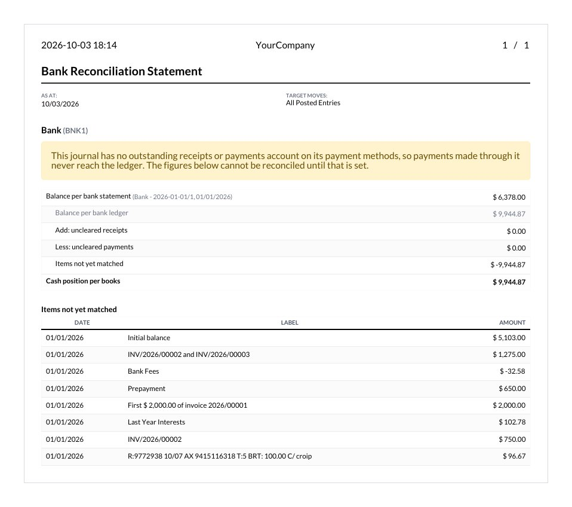
The bank reconciliation statement, with the schedule of what has not
cleared.
13.6 Daily reports
Reporting › Daily Reports. The three books a bookkeeper
prints every day.
Day Book — every journal item of the period, grouped under the
date it was posted on, with a total per day.
Cash Book — the movements of the cash accounts with a running
balance; the accounts of the cash journals are preselected.
Bank Book — the same for the bank accounts, to hold against the
statement.
Cash Book and Bank Book can carry an initial balance row, sort by date or by journal and
partner, and show all accounts, only those that moved, or only those with a balance.
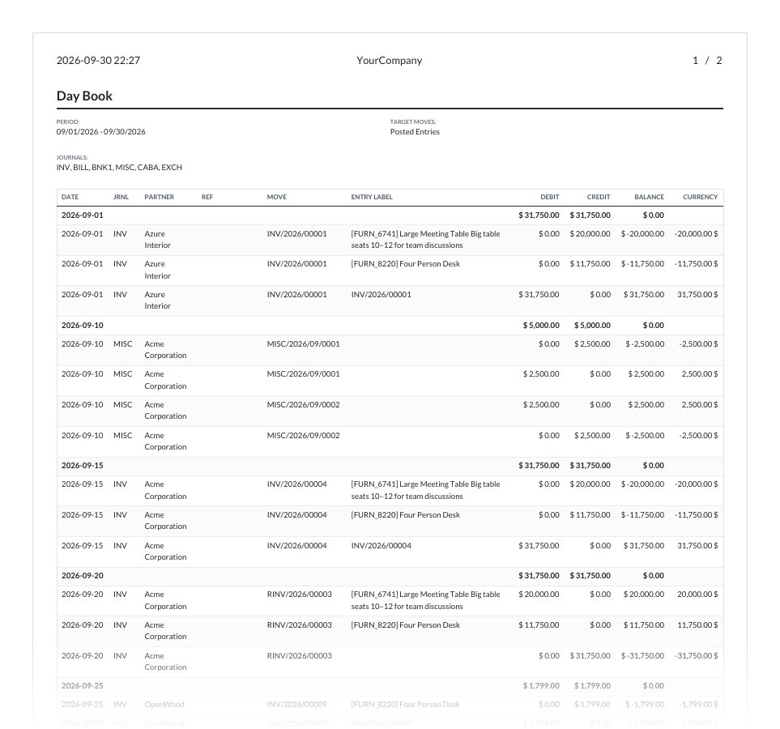
The Day Book, with the total of each day.
13.7 Printing one journal entry
Open any journal entry, invoice or payment and use Print › Journals
Entries: one page per entry with its journal, date, partner, reference and
status, every line with its account, label and analytic distribution, and the debit and
credit totals. It is the voucher to file, or to staple to the paperwork behind an
entry.
Good to know
The analytic column appears only when analytic accounting is on (section 2.6). With
it off the report drops the column rather than printing an empty stripe down every
page.
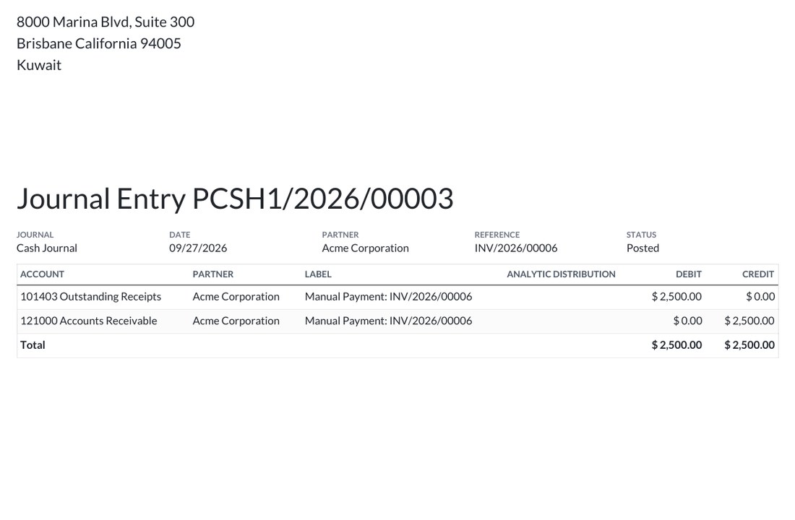
One journal entry, printed on the company letterhead.
13.8 Dashboards
The Dashboards application carries eight accounting dashboards in its Finance section:
Accounting Overview, Profit and Loss, Balance Sheet, Receivables and Payables, Bank and
Cash, Assets, Budgets, and Follow-ups and Cash Forecast.
They work over the period you choose, compare it with the same period last year or the
one before, and add up the companies picked in the switcher. All of them are computed
from account types, so they work with any chart of accounts. The formula
OM.ACCOUNT.BALANCE gives you the same figures in any spreadsheet of your
own.
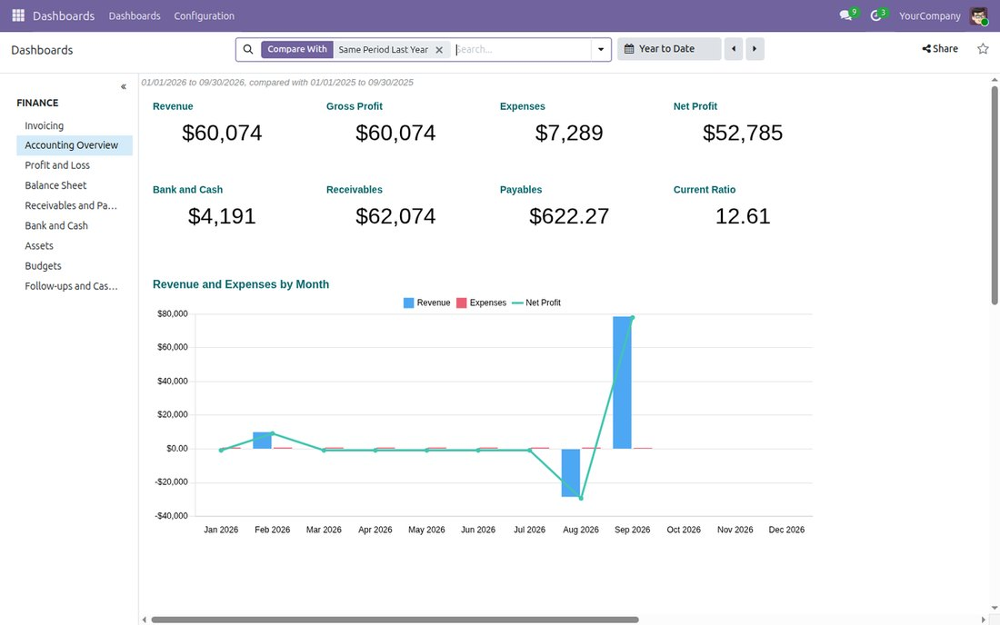
The Accounting Overview dashboard.
Part 14
Routines
14.1 Every day
Enter and confirm the customer invoices and the vendor bills of the day.
Register the payments you know about.
Import the bank statement and reconcile what the suggestions get right.
Count the till, record the cash statement, reconcile it.
Print the Day Book if your bookkeeping requires a daily record.
14.2 Every month
Post payroll, depreciation and any accruals.
Check the recurring payments generated what they should have.
Reconcile every bank and cash journal to the last day of the month.
Print the Bank Reconciliation Statement and agree it to the bank.
Empty the suspense accounts.
Revalue the foreign currency balances.
Run the Trial Balance, the Balance Sheet and the Profit and Loss; compare with last month.
Review the aged receivable and send the follow-ups.
Check the budgets for lines going over.
File the tax return, set the tax lock date.
Close the period and move the lock date forward.
14.3 Every year
Close all twelve periods.
Post your accountant's adjustments.
Check the assets analysis against the asset accounts.
Confirm the physical inventory and the stock valuation if you hold stock.
Run the year-end closing entry and open the new year.
Print the annual report for the file and for whoever signs the accounts.
Set the All Users Lock Date on the closed year.
Part 15
When something looks wrong
15.1 The usual suspects
Symptom
Where to look
A report is empty or missing accounts
The account type is wrong. Every report here is built from types, not codes.
The balance sheet does not balance
Run the Trial Balance for the same dates. An unbalanced result almost always means an entry posted to a period you are not printing, or an opening entry that was never balanced.
An account will not appear in Match Journal Items
Allow Reconciliation is off on the account.
A bank transaction cannot be reconciled
It is already reconciled, or another user has it open: a transaction being reconciled is locked so two people cannot match it twice.
The suspense account keeps growing
Transactions were validated without a full counterpart. Filter the journal items on the suspense account and finish them.
A statement file is refused
The format is not one of the six supported, or — for CSV and Excel — the file map does not match the file. Check the date format and the decimal separator first.
Importing the same file brings nothing in
Correct: the transactions were already imported. The message says how many were skipped.
A payment settles the invoice but nothing reaches the ledger
The payment method of that journal has no outstanding account. Section 3.4.
The bank reconciliation statement will not add up
Read the warning on the section. A journal with no outstanding accounts cannot be reconciled until they are set.
A payslip, invoice or entry cannot be posted
A lock date covers its date. Only an accounting manager can post before the journal entries lock date, and nobody before the all users lock date.
The rates stopped updating
Open the settings and read Last Update Result, then press Test Connection. A paying source with an expired key fails silently otherwise.
A revaluation is refused
That date is already revalued. Reverse or delete the existing adjustment entry first.
The taxes are a cent out against the invoice
The rounding method. Section 2.3, and it has to be decided once and left alone.
The fiscal localisation cannot be changed
An entry has been posted. Section 2.2 — this one is decided on day one.
15.2 Getting help
Every module in this suite is free and open source under LGPL-3. If something is wrong,
or you need a feature that is not here, write to
odoomates@gmail.com — and if you can, contribute the fix back so
the next person gets it too.